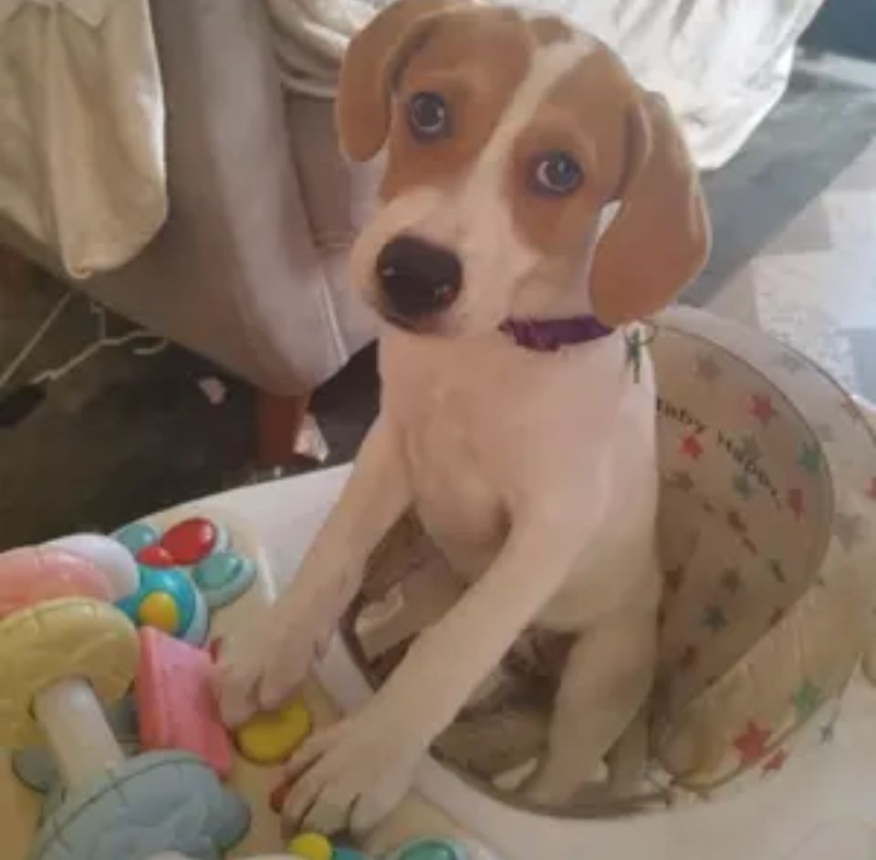
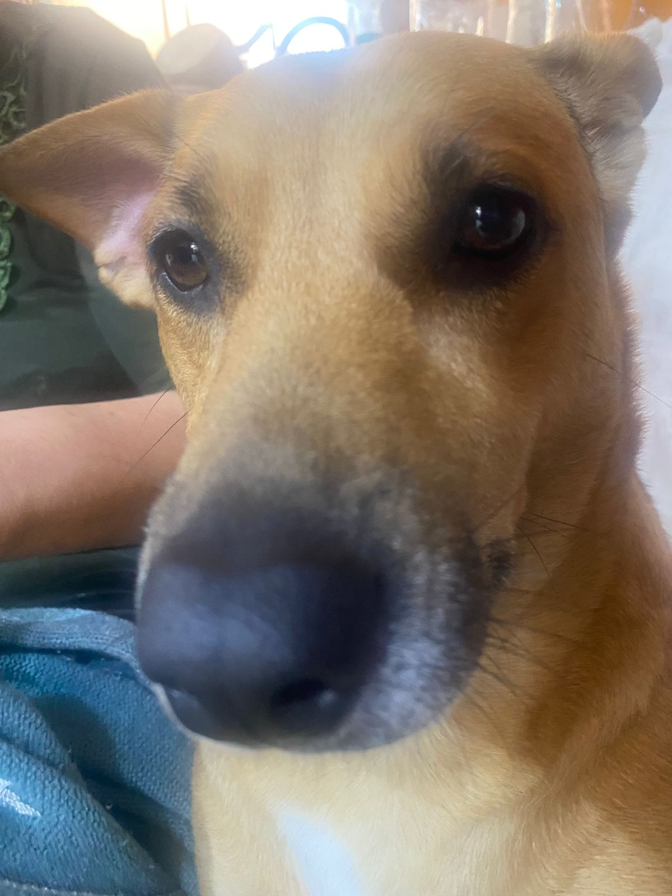
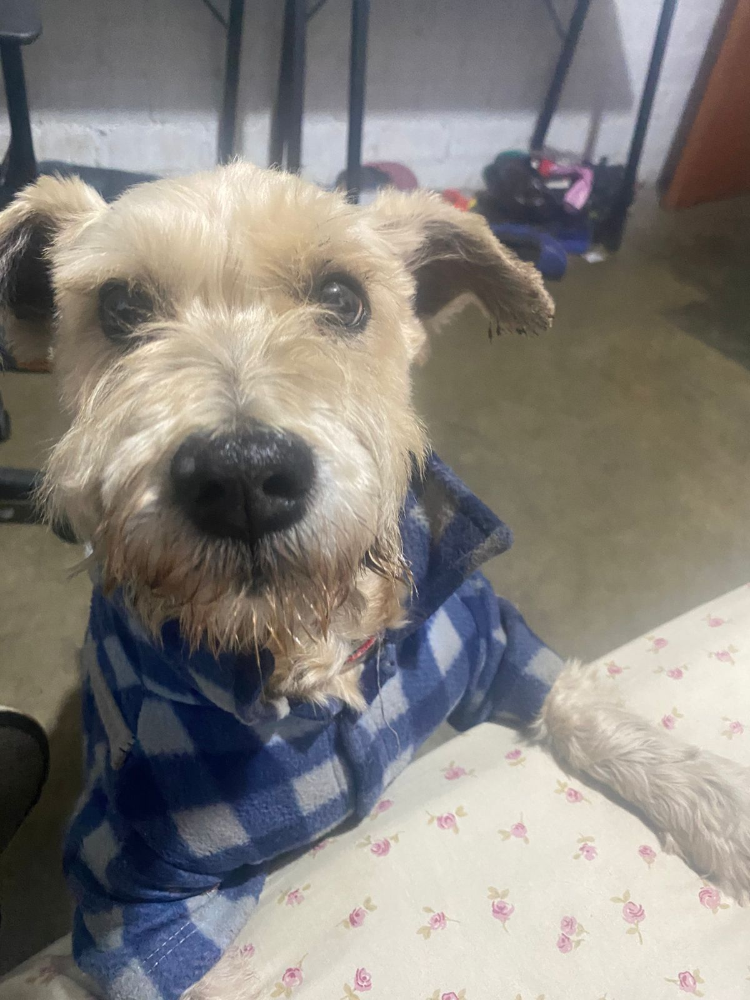

perritos de la familia
chia
 Chia es una perrita de casa de 2 años ella es muy cariñosa con todos
los humanos y le gusta jugar con su prima chakira y salir
a pasear a cada rato y echarse en la cama de su abuelita
Chakira
 Chakira es una perrita muy bonita de color caffe
ella es tranquila con la familia pero con los desconocidos
ella es agresiva ella tiene 4 años recien cumplidos
Peluchin
 Peluchin es un perrito adoptado de aproximadamente 8 años
a el le gusta dormir antes era un perrito callado y timido pero con el
tiempo se fue acostumbrando a la casa y se volvio bullero
El flaco

el flaco no es nuestro perrito pero igual todos
en la casa lo queremos el cuida la casa y viene para
la hora del almuerzo sin falta